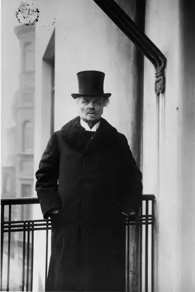
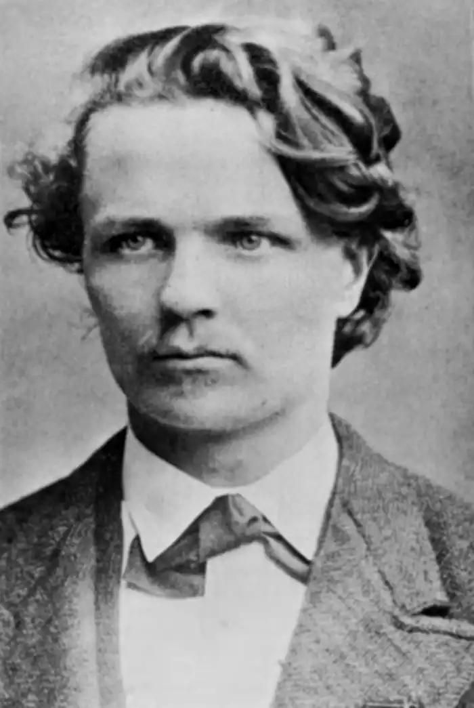

Стріндберг Юхан Август (Strindberg, Johan August — 22.01.1849, Стокгольм — 14.05.1912, там само) — шведський письменник.Стріндберґ є автором п'ятдесяти восьми п'єс, п'ятнадцяти романів, понад сотні оповідань і трьох поетичних збірок. Його геній драматурга визнавали Дж.Б. Шоу, котрий віддав свою Нобелівську премію, щоби оплатити переклад творів Стріндберґа англійською мовою, а Ю. О'Ніл був переконаний, що Стріндберґ "досі зостається найсучаснішим із сучасників, найвидатнішим тлумачем театру характерних духовних конфліктів, що складають драму — криваву драму — нашого теперішнього життя". Коло наукових інтересів Стріндберґа було підставою для порівняння його з Й.В. Гете: він вивчав китайську мову, писав праці зі сходознавства, лінгвістики, етнографії, історії, біології, астрономії, астрофізики, математики. Водночас займався живописом, віддав належне й захопленню містичними доктринами, передусім Е. Сведенборга, переклав шведською книгу Е. Гартмана про психологію несвідомого, яке постійно цікавило письменника і цей інтерес позначився на його творах. Був знайомий із Ф. Ніцше, і його ідеї про сильну особистість сприяли становленню стріндбергівської концепції про аристократію духу.
Саме уявлення Стріндберґа про склад суспільства є вельми своєрідним: він поділяв людей на представників "вищих" і "нижчих" класів, але до "вищих" класів у нього здебільшого належали жінки, які, за його теорією, є гнобителями чоловіків, а до "нижчих" — позбавлені жінками самостійності, пригноблені чоловіки. Тут яскраво виявилося переконання Стріндберґа в тому, що життя є одвічною боротьбою двох статей, переможницями у якій завдяки численним підступам і обманам виступають жінки. Але він також не нехтував і соціальними відмінностями для характеристики "вищих" і "нижчих" класів, проте до т. зв. "вищих" класів завжди ставився з великою недовірою.
Стріндберґ особливо гостро відчував перехідність своєї епохи. Маючи дуже нестійку психіку — він навіть був схильним до психічних захворювань, — Стріндберґ мав складний характер, важко сходився з людьми, а нерідко й поривав з ними стосунки без будь-яких на те підстав. Манія переслідування і манія величі розвинулися у нього, ймовірно, через особливу вразливість натури, які іноді доходили аж до галюцинацій. Складність особистості значною мірою була обумовлена і його походженням: батько Стріндберґа був аристократом, освіченим світським чоловіком, а мати — служницею. Батьки одружилися незадовго до народження письменника, хоча до того у них уже було троє дітей. Таким чином, становище перебування між двома світами, між двома станами і двозначність свого походження Стріндберґ відчув ще змалечку. Закінчивши школу, Стріндберґ вступив в Упсальський університет, де студіював філологію, філософію та хімію, проте після розриву з батьком у 1968 р. покинув університет. Був шкільним учителем, репетитором, журналістом, телеграфістом. Ставши помічником бібліотекаря у Королівській публічній бібліотеці (1874—1882), Стріндберґ серйозно зайнявся історією, літературою і театром. У 1871 р. Стріндберґ написав кандидатську дисертацію "Хакон-ярл, або Ідеалізм і реалізм", де висунув думку про необхідність для мистецтва співвідноситися з "правдою дійсності". Розвиваючи цю ідею у циклі "Перспективи" ("Perspektiver", 1872), Стріндберґ заперечив "хворобливий, фальшивий ідеалізм минулих десятиліть". Літературним дебютом Стріндберґа можна вважати драму "Местер Улуф"("Master Olof", 1872), присвячену одному з найважливіших для Швеції періодів — епосу Реформації. Автор намагався показати боротьбу за загальну рівність і виступив проти т. зв. "вищих" класів. "Местер Улуф" мав три редакції: 1872 — прозаїчна; 1874 — сценічна і 1877 — віршована. Діяч Реформації Улуф (Олаус) Петрі, котрий осуджує захист дворянських привілеїв і утиски анабаптистів, — сильна особистість, проте суперечлива: він не лише "ідеаліст", а й "відступник" від спільної справи бунтарів. Поряд з Улуфом Стріндберґ ставить друкаря Йерда, людину вольову та цілеспрямовану. Мовби проводячи аналогію між минулим і сучасністю, драматург бачить в історії постійну боротьбу між моральним та інтелектуальним прогресом, з одного боку, та політичними пережитками — з другого. Драма постає і як широке історичне полотно (картини національного життя), і як твір глибокого соціально-філософського та психологічного планів. Роман "Червона кімната" ("Roda rummet", 1879) став своєрідним маніфестом шведського реалізму. Перед нами постає формування особистості головного героя — Арвіда Фалька, який не може залишатися чиновником, бо розуміє безглуздість своєї роботи. У гротескній формі автор описує численні канцелярії, де повно-повнісінько дрібних чиновників, які найбільше бояться, щоби хто-небудь з-поміж них не зайнявся справжнім ділом. Вищі ж чиновники взагалі не з'являються на службі, їм навіть платню приносять додому. Всі ці канцелярії нічим не відрізняються одна від одної, скрізь просять дотримуватися тиші, "народ обзивають бидлом" і вважають, що за відповідних обставин він придатний для того, щоби стати гарматним м'ясом. Чиновники, журналісти, комерсанти, художники, обивателі строкатим натовпом проходять перед нами, буденне життя стає матеріалом для письменника. Стріндберґ-романіст писав у статті з нагоди чергового ювілею Г. К. Андерсена: "У мене було багато вчителів: Шиллер і Ґете, Віктор Гюґо і Діккенс, Золя і Палудан (Ф. Палудан-Мюллер — данський письменник XIX ст.), але я підписую свою статтю як Август Стріндберґ, учень Г. К. Андерсена". Андерсена, який створював казки про сучасність, він цінував найвище. У "Червоній кімнаті" Стріндберґ виступає також як послідовник Марка Твена, Ч. Діккенса і Палудана-Мюллера, хоча андерсенівськии потяг до прекрасного і віра у його тріумф постійно пробиваються крізь бруд і бездуховність зображеного в романі світу. 70—80 pp. дослідники вважають періодом реалістичної творчості Стріндберґа. На початку 80-х pp. особливо пожвавився інтерес письменника до життя народу, його великих творчих сил. Конфлікт із суспільством дедалі більше загострювався і досяг апогею після статті "Нова держава" ("Det nya riket", 1882), коли письменникові у 1883 р. довелося емігрувати. Еміграція фактично триватиме до 1899 р. Статті Стріндберґа свідчать про його захоплення соціалізмом. Цикл новел "Утопії в дійсності" ("Utopier і verkligheten", 1885) віддзеркалює сподівання автора на можливість соціальної справедливості і соціального миру. Перший автобіографічний роман "Син служниці" ("Tjanstekvinnans son", 1886-1887) пов'язаний з близькою для автора у ті роки темою становища простого люду, розкриває особливості психології самого автора. Стріндберґ замешкував у Німеччині, Швейцарії, Австрії, Англії і особливо довго у Франції, тісно познайомився з чільними письменниками, суспільними діячами та філософами свого часу: норвежцем Б. Бйорнсоном, данцем Ґ. Брандесом, французом Е. Золя, німцем Ф. Ніцше. їхній особистий вплив позначився на його поглядах і творчості вже наприкінці 80-х pp. Ідеї духовної елітарності Ніцше у Стріндберґа набули особливої гостроти (при його цілковитій безкомпромісності і манії величі); натуралістична теорія Золя зазнає змін, відбиваючись в увазі до буденності, дослідженні найдрібніших різнорідних впливів середовища на людину, підкресленій увазі до тих відмінностей, що зумовлені статтю. У письменника виникає переконання, що чоловіки та жінки перебувають в стані одвічної боротьби між собою, навіть кохання він інтерпретує лише як постійне протистояння у коханні-ненависті. Наприкінці 80-х pp. сформувався натуралізм Стріндберґа, що поєднується із символістичними елементами. Цей період включає і початок 90-х pp. Найбільш помітними творами цього періоду стали драми "Батько" ("Fadren", 1887) і "Фрекен Юлія" ("Froken Julie", 1888). Передмова до останньої драми стала маніфестом шведського натуралізму, який справив значний вплив на багатьох письменників Європи, а найбільше — на К. Гамсуна. Автор повідомляє про те, що він обирає "мотив, який ... далекий від сучасних політичних конфліктів"; при цьому він стверджує, що тема "соціального сходження або падіння, конфлікт високого або низького ... конфлікт між чоловіком і жінкою були, є і будуть породжувати постійний інтерес". Він же у "Фрекен Юлії" зображає "загибель цілого роду" — так виходить на поверхню натуралістична ідея біологічного розвитку людини. Проте Стріндберґ сам же й стверджував, що намагався уникнути однобокої фізіологічної мотивованості вчинків своїх героїв — своє новаторство він вбачав у тому, що створював багатомотивність вчинків і багатомотивність у їхньому тлумаченні. Ці мотиви породжувалися як спадковістю, так і багатьма факторами навколишнього середовища, які створюють той чи інший людський тип. При цьому письменник стверджував, що його персонажі є "безхарактерними" у тому сенсі, що у них із самого початку домінуючі риси в душевному комплексі переплітаються з темпераментом. А душевний комплекс поєднує у собі всі впливи, аж до впливів минулих культур. Стріндберґ зображає критичні ситуації, оскільки тільки у них — у їхніх суперечностях, в їхній парадоксальності — проявляється те, що письменник називає "радістю життя", хоча тут точніше буде сказати про повноту її виявлення. У статті "Про сучасну драму і сучасний театр" ("От modernt drama och moderna teater", 1889) він скаже влучніше і про вибір сюжетів: "У новій натуралістичній драмі стало помітним виразне прагнення до переконливих мотивацій. Саме тому найчастіше беруть смерть у її крайніх проявах: життя і смерть, народження й умирання, боротьба за подружжя, за засоби існування, боротьба за честь..." У XX ст. екзистенціалісти вестимуть мову про пограничні ситуації — Стріндберґ випередив їх. У цій самій статті він писав і про те, що визначальною властивістю драми є не сюжет, не вигадана інтрига, а дія. ота непідвладна розрахункові властивість як самого життя, так і драми, що створює нову якість ідей, які розвиваються у творі. Стріндберґ розумів слово "дія" у драмі як процес осмислення, що передує фізичній дії, і вважав це найважливішою властивістю цього жанру. Драми "Батько" і "Фрекен Юлія" побудовані на надзвичайно напруженій боротьбі чоловіка та дружини — у першій п'єсі та панської доньки і лакея — у другій.